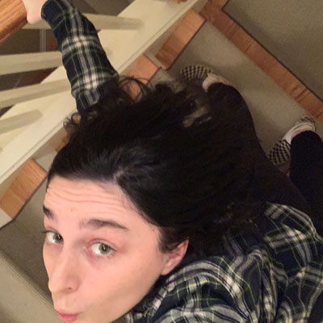
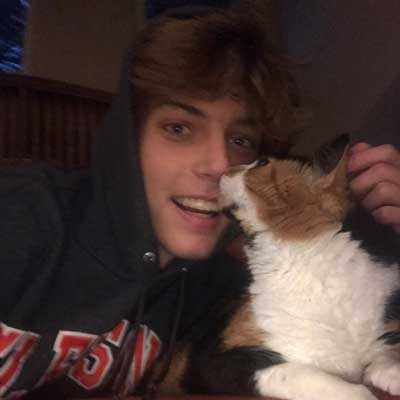
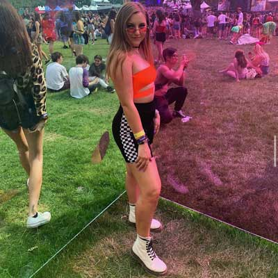
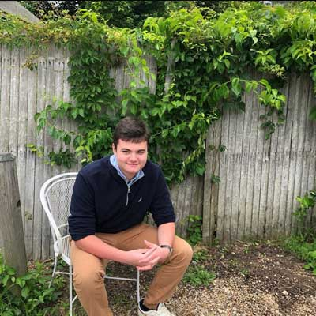
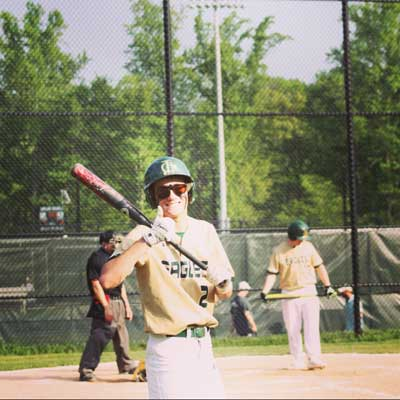
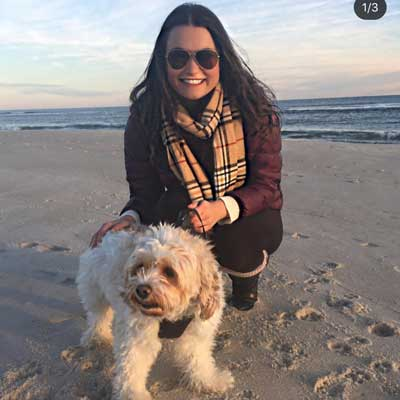
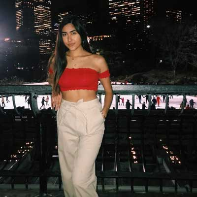
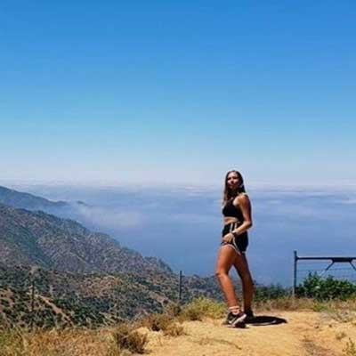

My best friends :)
Disclaimer: this is not a tier list, I love you all equally.
Addy Mudge
This girl... This girl is my ride or die. She's there for me through thick and thin and everything she does is inspiring to me. She is still trying to figure out her life and exactly what she wants to do with it. She, however, does not stop working for a second, whether it's dog sitting or her job at BoatYard. She's from Annapolis, Maryland and we went to highschool together.
Sam Ellis

SMA!! Sam is one-third of Noaidam. He was like my first really close guy friend and we've been out here killing it since Bring It On: The Musical. He is planning on majoring in musical theater and fully sending his fame. Hopefully he remembers me when he IS famous.
Aidan Smith
Aidan is such a perfect being. He just exists and vibes and I really appreciate that energy. He's the other third of Noaidam. He plans on going to school for industrial engineering. We also met through theater and I am so glad about that.
Savannah Harpster
Oh my goodness! This girl is A1. She is diabetic and a biomedical engineer and hoping she will research for diabetic equipment one day, which I think is really impressive. I met her freshman year, first semester, and she has been my other half since then. She's a Florida local.
Kurt Denton
I feel like Kurt would yell at me but he also is a significant character in the movie that is my life so like if there is a bio I have to put in here, it is Kurt. Kurt is my housemate and he makes every single day of my life feel like a realty tv show. Thank you Kurt for existing. He's from Long Valley, New Jersey and he talks about it a lot.
Andrew Wienberg
"Every group needs its token jew" is a famous Andrew line. Andrew tacks onto Noaidam to create Noaidamdrew. He goes to some cold college in New York (but not the city), and I miss his existence a lot at college. He is from home too, an SP local as well.
Katie Dorane
Katie was one of the first people I met at Univeristy of Miami. I decided to sit next to her at the College of Arts and Science introduction ceremony and out of sheer coincidence we became besties. She's from Long Island and looks really cute in fall clothes.
Enjolie Vadalla
World's smartest pre-med major. Literally she is so busy all the freaking time and usually just does not seem stressed. She finds time to study, research, sleep and have fun and I have no idea how she does it. I tried to do all four of those and I just kicked out sleep.
Natalie Scott
"That's so crazy" is one of her trademarked lines. She always adds color to a night and she always can put a smile on my face. Just writing all these bios shows me how much I surrounded myself with like-minded driven peoeple and I love it. She's from Minnesota and that is the furthest state of all my friends from me.